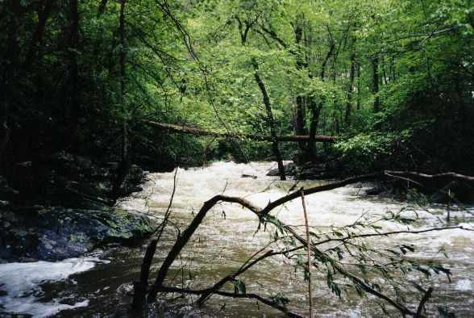
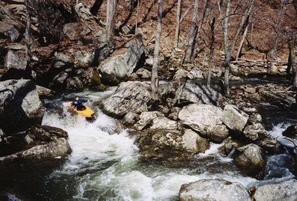
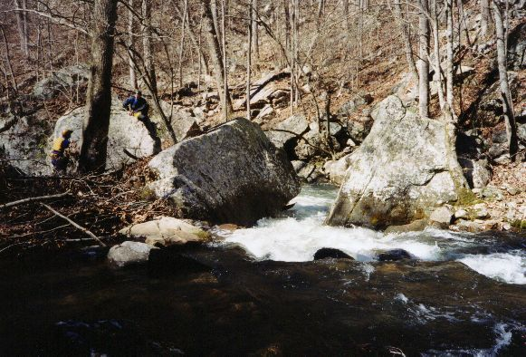
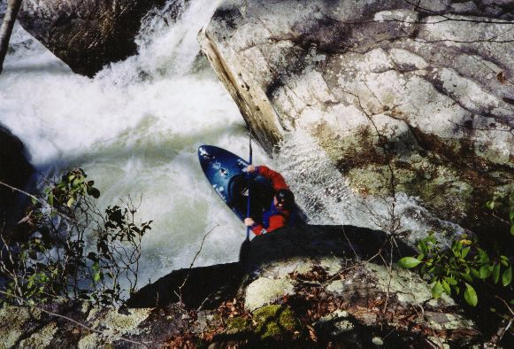
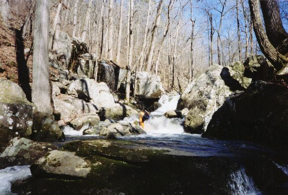
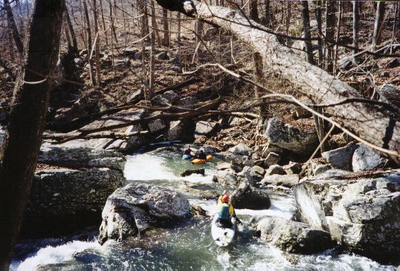
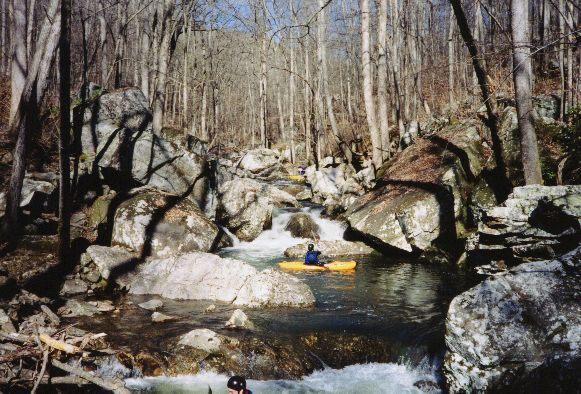

|  | This is a shot very
early in the run on Dry into Sauty. This was TOO MUCH water (at least
for us mortals), so we walked out shortly after this was taken. This
is the low gradient, easy part of the run.
Early 1999 |
|  | The remaining pictures are from a very
low water run we made in March 2001.
Wade Amis at the bottom drop of the first 'bigger' rapid. Trees made us do the limbo here but at better water a walk would have been required for a few yards. |
|  | The slot leading to the eddy above the cauldron falls. Note the log under the rock where the water pushes. This whole area is a sieve. |
|  | Fred Westrom ran the slot above which leads to this drop. This picture is a neat optical illusion. He is actually going off a 12'-15' drop into a cauldron with undercuts and much boiling water below. |
|  | Wade runs the last part of a rapid two drops down from the cauldron. We walked the 15'er in the background due to likelihood of rock/body impact. |
|  | Mark D' about to go off a 7' drop while Wade and Fred discuss the time of day down below. |
|  | Your typical rapid at LOW water. Tight. |